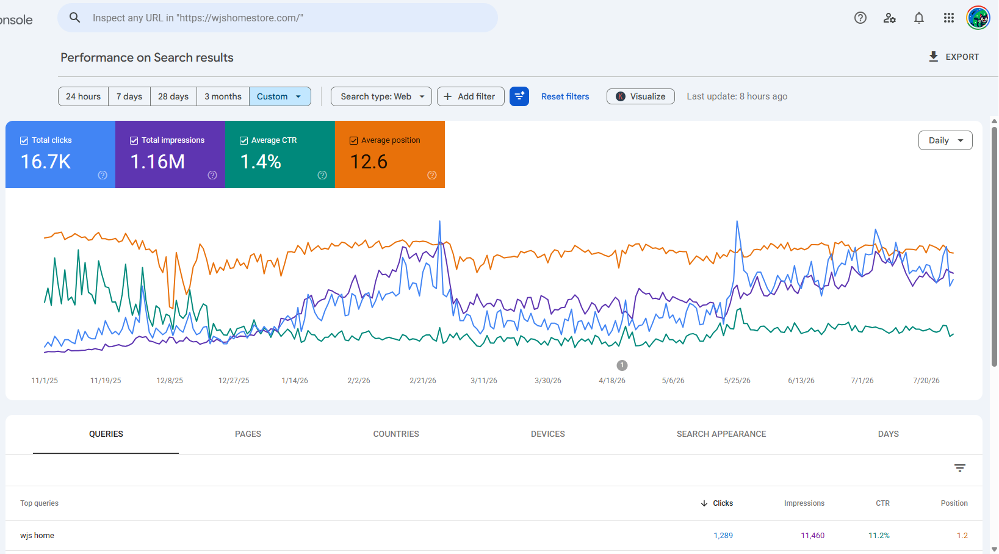

Business Problem
Multiple pages lost visibility at the same time, and daily GSC clicks fell from approximately 100 to single digits.
WJS Home's daily GSC clicks fell sharply from approximately 100 to single digits. I used official Google documentation, GSC data, and affected page patterns to identify the primary content risks and develop a recovery plan. Following content consolidation and updates, daily clicks returned to approximately 100 within three months.
Workflow
Multiple pages lost visibility at the same time, and daily GSC clicks fell from approximately 100 to single digits.
I reviewed official Google guidance and exported the pages and queries with the largest click and ranking losses from GSC.
Affected pages showed template-driven content, topic overlap, limited original insight, and insufficient supporting data.
I consolidated overlap and added authoritative data, transparent ranking criteria, original analysis, and differentiated content.
Daily clicks returned to approximately 100 within three months, supported by a clearer people-first content standard.
Recovery Evidence
The recovery was measured in Google Search Console, using the same daily-click metric across the decline and recovery periods.
